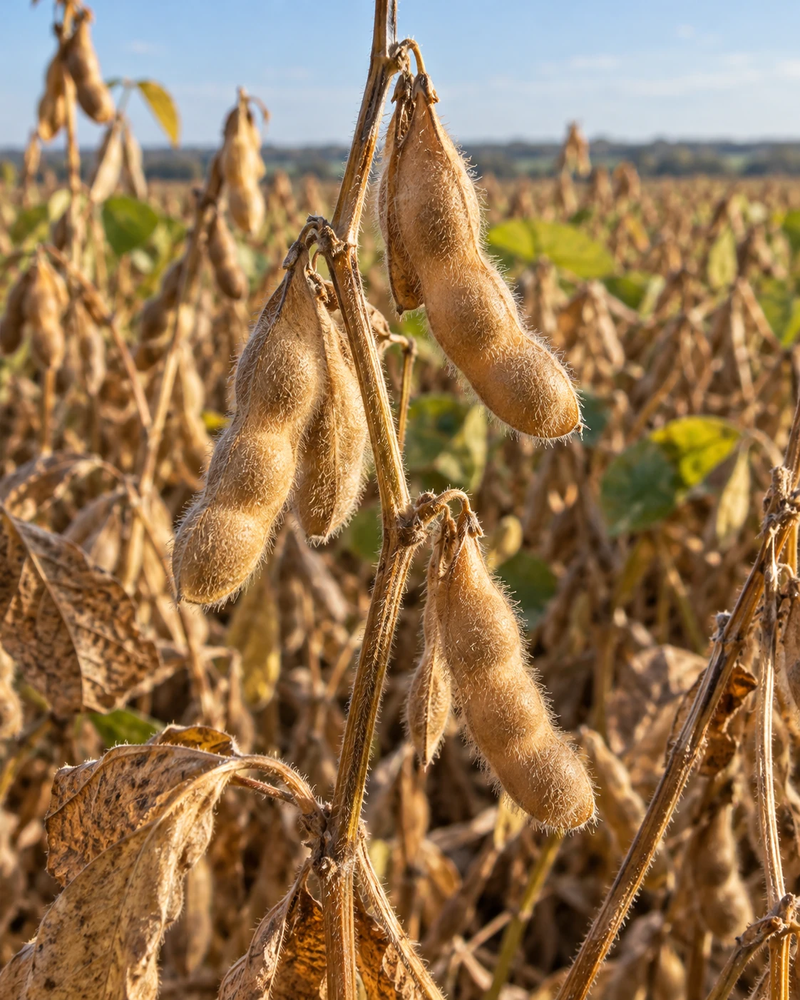
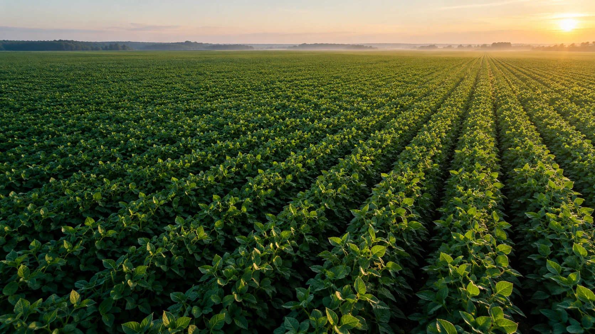
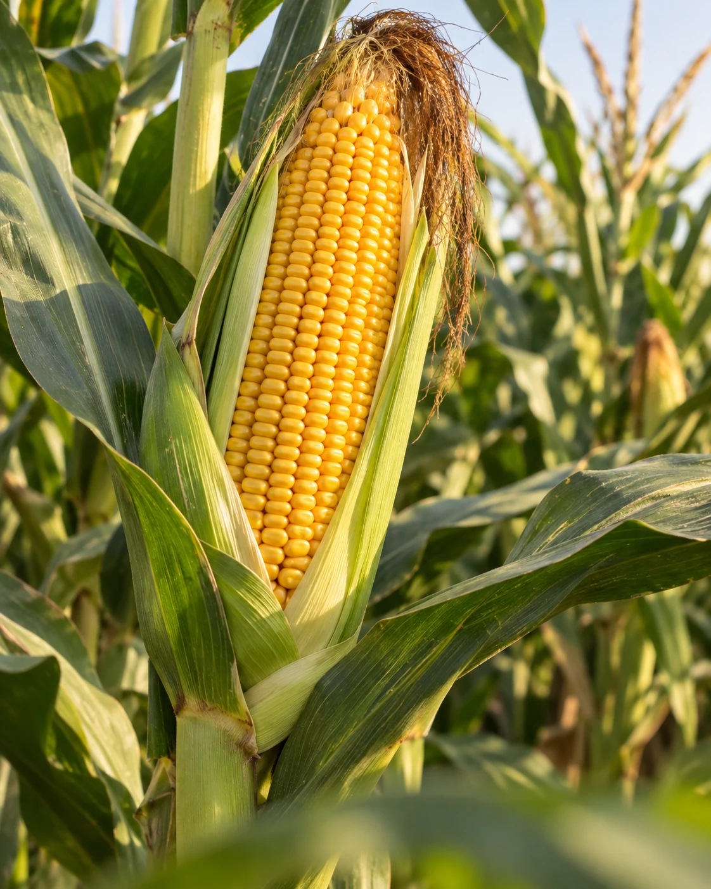
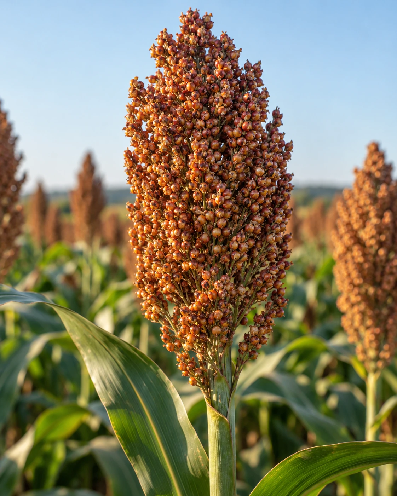
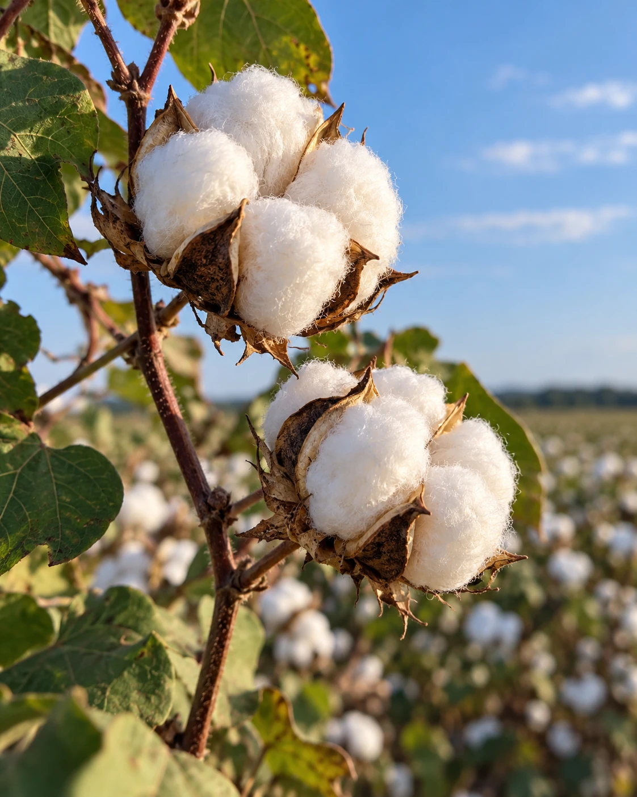
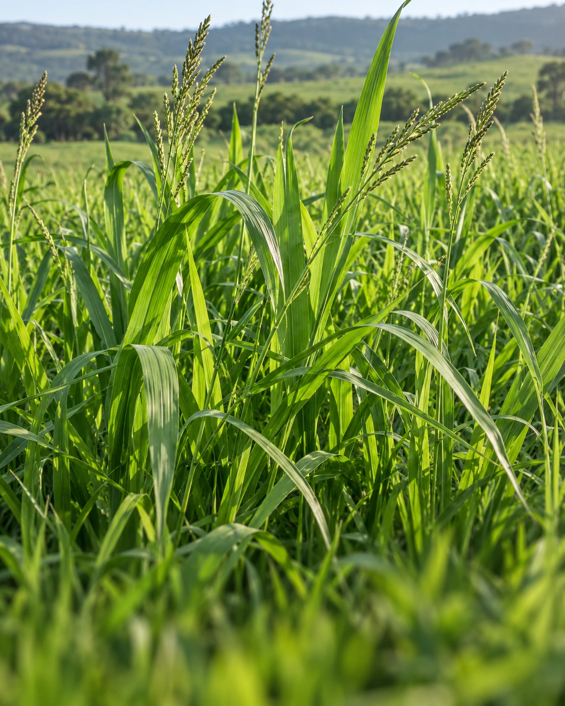
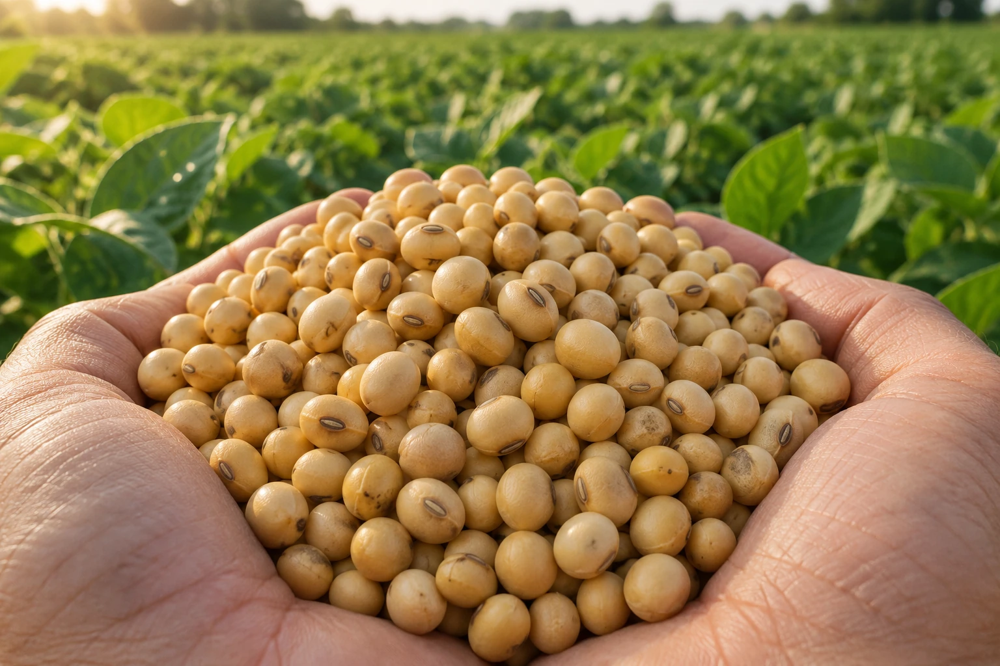
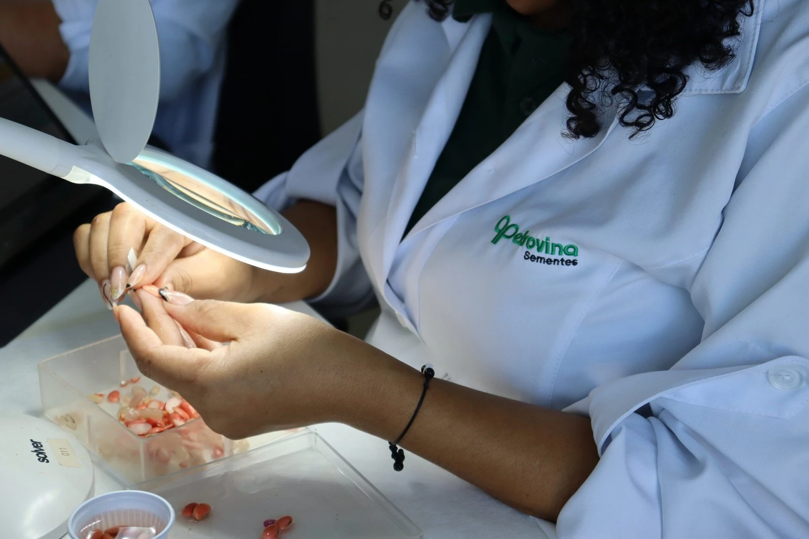
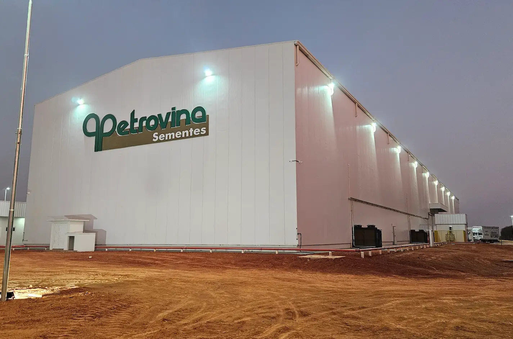

O futuro se
planta agora.
Sementes de alto vigor. Tecnologia que faz a diferença. Uma parceria que cresce com você, safra após safra.
05
Culturas.
Infinitas possibilidades.
04
Centros de distribuição.
Mais perto do seu campo.
+40
Profissionais no campo.
Parceria de verdade.
Escolha sua cultura.
Planeje a próxima safra.
Conheça as cultivares, encontre a tecnologia para seu campo e dê o próximo passo com um orçamento 100% online.

Milho

Sorgo

Algodão

Brachiaria
Da escolha da semente ao próximo plantio, nosso time está por perto.
Encontre seu especialista
Negócios e soluções.
Do início ao próximo ciclo.
Da escolha da semente à chegada no campo, encontre o apoio certo para cada etapa da sua safra.
Petrovina Prime
Tecnologia e cuidado para levar o potencial da semente até a sua lavoura.
Conheça o PrimeCarga térmica
Transporte refrigerado e atenção à qualidade, da origem até a entrega.
Conheça o transporteFreereplant
Apoio ao replantio para seguir em frente. Conheça o programa e suas condições.
Conheça o programaSeed Prime
Análise de sementes para orientar as decisões do seu próximo plantio.
Conheça o laboratórioMais apoio para o seu campo.

O campo produz.
A informação conecta.
Acompanhe o mercado de commodities e explore informações para o seu próximo negócio.
Explore commoditiesPerto da semente.
Perto de quem produz.
Qualidade se constrói de perto. No cuidado com a semente e na parceria com cada produtor.
No laboratório Seed Prime, a análise das sementes faz parte desse cuidado. Da produção ao armazenamento e ao transporte, nossa estrutura acompanha cada etapa até o campo.
Conheça nosso laboratório
O mesmo vigor.
Um novo compromisso.
O PrimePro Eco combina a qualidade das sementes de soja Petrovina com compensação de carbono no processo de produção.
Conheça o PrimePro EcoGenética e vigor preservadosCompensação de carbono

O campo não para.
A informação também não.
Todos os conteúdos 
Vamos planejarsua próxima safra.
Conte com as sementes, a tecnologia e o time da Petrovina para planejar o próximo plantio.